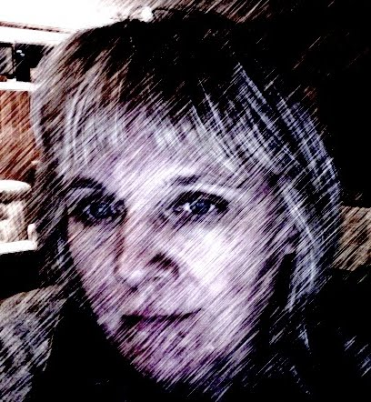

|
LOON PHILOSOPHY Welcome to my journaling site. Wishing everyone harmony and all things bright. INSPIRED BY NATURE - IN HARMONY WITH NATURE 
MY JOURNALS
|
Copyright 2010-2023 Anda Vitols. All Rights Reserved.
anda dot vitols at hotmail.ca | Ontario Canada
"Art is mind expressing itself under the conditions of matter."click for discussion
More Oscar Wilde quotes and analysis!